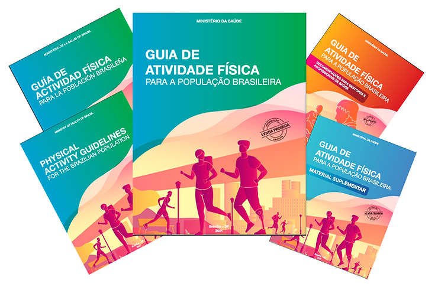
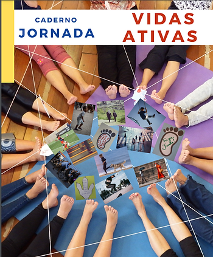

O Ministério da Saúde lançou no dia 29 de junho, o GUIA DE ATIVIDADE FÍSICA para a população brasileira. O lançamento foi realizado com transmissão ao vivo pela internet e aberto com a apresentação de Juliana Resende, diretora do Departamento de Promoção da Saúde, que destacou a importância e a presença desses Guias nas politicas publicas de países de alta renda e em 50% dos países das Américas. “Uruguai. Colombia e Argentina
já contam com este tipo de recomendação”, diz Juliana.
Organizado pela Universidade Federal de Pelotas (UFPel) e Secretaria de Atenção Primária à Saúde (SAPS), o GUIA foi produzido por uma comissão científica e 70 pesquisadores alocados em oito grupos de trabalho: conceitos, crianças, jovens, adultos, idosos, educação física escolar, gestantes e atividade física para pessoas com deficiência.
O resultado são oito capítulos e quatro domínios: tarefas domésticas, deslocamento, trabalho ou estudo e tempo livre. O objetivo do projeto é estimular a prática da atividade física e ajudar os profissionais da saúde a reduzir o sedentarismo.
Para os profissionais, foi produzido também o material suplementar: Guia para Gestores e Profissionais da Saúde orientando como e porque utilizar.

Também no guia suplementar, consta toda a bibliografia consultada – neste, em especial destacamos o Caderno Vidas Ativas elaborado por LUCIANA FERREIRA ANGELO (SECRETÁRIA DA ABRAPESP), MARCO S VINICIUS MOURA E SILVA, MAYKELL ARAÚJO CARVALHO E SÔNIA REGINA CASSIANO DE ARAÚJO, do Grupo de Estudo “Letramento Corporal e Relatórios sobre Atividades Físicas e Esportivas”, sediado no Centro de Práticas Esportivas da USP, em parceria com o Instituto Ayrton Senna. O Caderno é “uma forma de compartilhar trilhas percorridas que nos ajudam a compreender o modo de Vidas Ativas e estimular a descoberta e a criação de possibilidades tanto individuais como coletivas, visando promover a prática das Atividades Físicas e Esportivas ao longo da vida.”
Caderno-Jornada-Vidas-Ativas-Cepeusp-IAS.pdf
Acesse a página da versão em áudio ou baixe seu exemplar clicando nas versões abaixo
CLIQUE NA IMAGEM E ACESSE O GUIA EM AUDIO
CLIQUE E BAIXE O GUIA NA VERSÃO EM PORTUGUÊS
HAGA CLIC Y DESCARGUE LA GUÍA EN LA VERSIÓN EN ESPAÑOL
guia_actividad_fisica_poblacion_brasilena.pdf
CLICK AND DOWNLOAD THE GUIDE IN THE ENGLISH VERSION
physical_activity_guidelines_brazilian_population.pdf
CLIQUE E BAIXE A VERSÃO COM RECOMENDAÇÕES PARA GESTORES E PROFISSIONAIS DA SAÚDE
E PARA VOCÊ QUE QUER PESQUISAR MAIS SOBRE O TEMA, CLIQUE E BAIXE A PUBLICAÇÃO COM MATERIAL SUPLEMENTAR